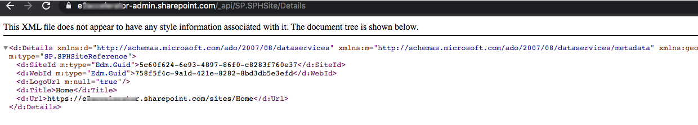

SharePoint Rest API to retrieve your tenant's Home Site Details
Published on 07/01/2020
SharePoint Home Site which is a fairly new concept, is basically a landing site for your organization.
There can be one Home Site per tenant, read more about SharePoint Home Sites here
Home Site can now be set, removed or retrieved using Powershell or Office365 CLI commands.
If you want to programmatically get the Url or any basic information of the Home Site in your tenant using code you can do so by making a rest call (GET to be specific).
Here is the reference from sp-rest-explorer for the API.
I have a site in my tenant https://yourtenant.sharepoint.com, See below rest Url that should be used in your rest call to get Home site details.
https://yourtenant.sharepoint.com/_api/SP.SPHSite/Details
Any site in your tenant , even the tenant admin url can be used along with the rest api path /_api/SP.SPHSite/Details to retrieve the home site details.
The result when I have just passed the rest url on my browser.

Here you can see the result when I make the call, the details retrieved are -
- SiteId (Site Guid)
- WebId (Web Guid)
- LogoUrl (If any set)
- Title (Title of the home site)
- Url (Url of the home site)